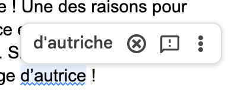

L'écriture inclusive, ce n'est pas que le point médian
Partie 2 sur 4 : concrètement on fait comment ?
Avant de commencer, voici un retour de mon expérience : une fois compris le pourquoi avoir une écriture inclusive est importante, le comment est facile. Cela demande simplement une petite gymnastique de l’esprit au début et de déconstruire certaines habitudes. C’est quelque chose qui se fait rapidement. Et ce, même pour la dyslexique que je suis !
- accorder en genre les noms de métiers, titres, grades et fonctions
- éviter le masculin générique
- éviter les formulations sexistes et dégradantes
Voyons comment cela fonctionne.
Accorder en genre les noms de métiers, titres, grades et fonctions
Déjà une petite devinette :
Un homme et son fils ont eu un accident de trottinette. Le fils s'en sort gravement blessé. Il est transporté à l'hôpital par son père où il doit être opéré, mais le docteur refuse sous prétexte que le patient est son fils. Comment est-ce possible ?
Je vous laisse mariner quelques secondes…
Tout simplement, car le docteur est sa mère. Vous aviez trouvé ? Félicitations ! Si non, pas de panique, ce n’est pas par mauvaise volonté, mais c’est lié à la représentation mentale masculine que vous avez du terme “le docteur” contre lequel il est compliqué de lutter.
Vous avez sans doute déjà entendu (ou même dit) qu’autrice est moche ? Pourtant il n’y a aucun problème à l’usage d’agricultrice. Ou de puéricultrice ! Une des raisons pour lesquelles nous pouvons avoir du mal avec l’usage du terme autrice est que l’on n’en a pas l’habitude. Et non pas, car il s’agirait d’un mot pour certaines et certains moche. Si nous avons fini par dire euro à la place de franc, nous devrions arriver à nous habituer à l'usage d’autrice !
Notez que le correcteur d’orthographe me le signale comme étant une faute…
Par contre, le mot existe bien dans le dictionnaire du Robert comme féminin d’auteur.
Concrètement
il s’agit d’utiliser les formes de féminisation traditionnelles françaises. L’objectif est d’aller au plus simple pour être le moins élitiste !
Développeur devient développeuse.Voici une liste d’exemples pour vous aider dans les structures :
Les mots se terminant au masculin par une voyelle
- élu ➯ élue
- apprenti ➯ apprentie
Les mots se terminant au masculin par une consonne
- médical ➯ médicale
- chef ➯ cheffe
- intellectuel ➯ intellectuelle
- citoyen ➯ citoyenne
- banquier ➯ banquière
- développeur ➯ développeuse
- ingénieur ➯ ingénieure
- ambassadeur ➯ ambassadrice
- acheteur ➯ acheteuse
- administrateur ➯ administratrice
- créatif ➯ créative
- avocat ➯ avocate
- président ➯ présidente
- artisan ➯ artisane
Éviter le masculin générique
Formulation fléchie ou double flexion
Il s’agit de mentionner les termes féminins et masculins plutôt qu’uniquement le masculin générique : développeur devient développeur et développeuse.
Quel ordre respecter ?
Cet ordre a une importance, car face à un couple de mots, notre cerveau a tendance à accorder plus d’importance et de pertinence à celui placé en premier.
Habituellement, le masculin est placé en premier : Monsieur et Madame, mari et femme, frères et sœurs… Cette habitude renforce la position plus avantageuse des hommes dans la société.
Il est conseillé d’utiliser l’ordre alphabétique afin d’alterner de manière globalement équilibrée. On dira alors Madame et Monsieur, femme et mari et frère et sœur (le f arrivant avec le s dans l'alphabet).
On peut également prendre l’option de toujours mettre le féminin en premier. Attention toutefois à ne pas perdre en égalité et à avoir un effet d’invisibilisation et de rigidification.
Les avantages et inconvénients de la double flexion
Avantages
- La facilité
- Marque une attention manifeste à l’égalité
- Peut faire un effet de style
La double flexion “est à la portée de chacun·e : elle ne coûte qu’un peu de salive à l’oral et qu’un peu d’encre à l’écrit.” P.81, Le langage inclusif : pourquoi, comment par Éliane Viennot
Inconvénients
- La longueur
- L’effet d’insistance
- Peut diluer le propos en diluant le sens du texte
Formulations épicènes
Utiliser des mots dont la forme ne varie pas, ou plus, en genre : développeur devient dev ou personne développeuse.
Par exemple, enfant, élève, adulte, collègue, cadre, partenaire, malade, titulaire, jeune, membre, etc. On peut écrire un ou une élève, ou encore la ou le graphiste. Bien que les substantifs épicènes sont minoritaires, il en existe suffisamment pour que l’on puisse régulièrement en trouver. De nombreux noms de métiers, titres ou qualificatifs sont notamment épicènes comme fonctionnaire, journaliste, typographe, climatologue, psychiatre, cadre, juge, etc.
Le vocabulaire professionnel est truffé de termes épicènes.
Petit tips, pour aider à trouver des formulations épicènes, un dictionnaire de synonyme est un super outil !
Les avantages et inconvénients des formulations épicènes
Avantages
- La concision
- Le style et diversité des synonyme
Inconvénients
- Parfois trop approximatif
- Son applicabilité
- Problème d’accessibilité (FALC*)
Formulation englobante
Utiliser une formule plus générale qui désigne le collectif plutôt que l’individu : développeur devient le développement .
Les formulations épicènes et englobantes sont souvent confondues et amalgamées.
Alors que pour l’épicène, on utilise généralement des synonymes, en formulation englobante, on va utiliser des “hyperonymes”. C'est-à-dire des termes qui englobent d’autres termes plus spécifiques. Par exemple : animal de compagnie est l’hyperonyme de chien qui est lui-même l’hyperonyme de caniche.
On peut également recourir à des “métonymies”, c'est-à-dire des termes qu’on utilise pour désigner une idée liée : l’hôpital pour parler du personnel hospitalier. Le personnel pour dire les salariés.
Ou alors utilisé des métaphores : les blouses blanches.
Les avantages et inconvénients des formulations englobantes
Avantages
- La concision
- Le style et diversité des synonymes
Inconvénients
- Peut diluer la responsabilité des personnes auxquelles on fait référence
- Manque de précision
- Demande aux personnes d’avoir le même référentiel culturel pour comprendre les métaphores et métonymies
Si on vous interdit d’utiliser l’écriture inclusive, dites-vous qu’on vous interdit l’usage de synonymes. Votre interlocuteur ou interlocutrice ne maitrise simplement pas le sujet.
Au prochain article, je vous parlerai du fameux point médian : fonctionnement, idées reçues et accessibilité (on ne se refait pas) sont au programme !